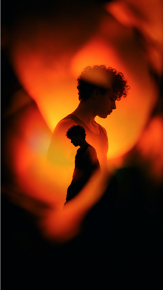

Paloma
Vasconcelos
Tenho 20 anos e conecto imagem, som e ritmo para contar histórias. Sou editora de vídeo e proprietária da Triade Kriyo. Do primeiro corte ao acabamento, busco dar personalidade a cada projeto.
Skills
Experiência
Minha trajetória inclui experiência com a V4 Company e a construção da Triade Kriyo, minha produtora. Reúno edição de vídeo, design gráfico, captação e motion graphics para transformar ideias em conteúdo audiovisual.
Projetos
Carregando projetos…
Escolha um projeto e dê o play.
O próximo projeto
pode ser o seu.
Tem uma ideia, uma história ou uma marca para colocar em movimento?
Vamos conversar sobre como dar forma a ela.